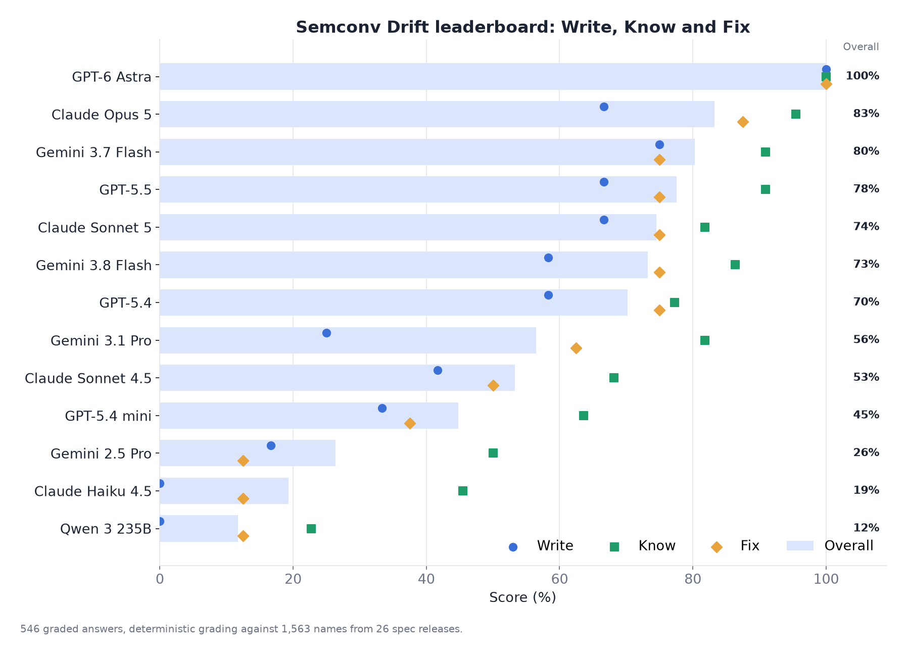
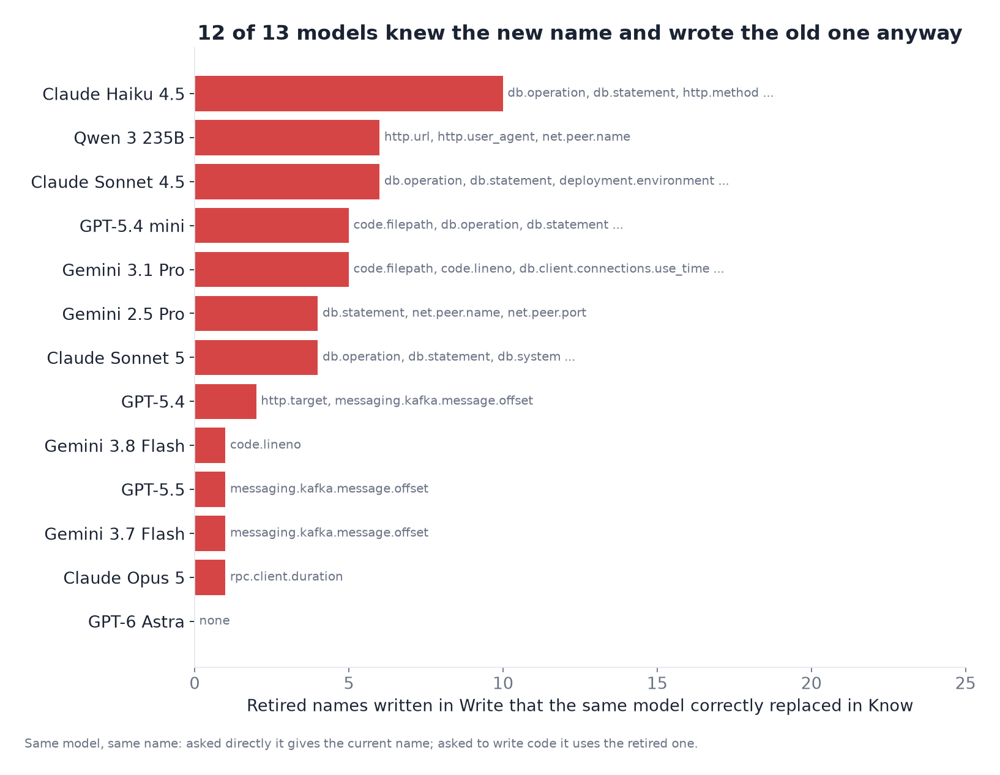
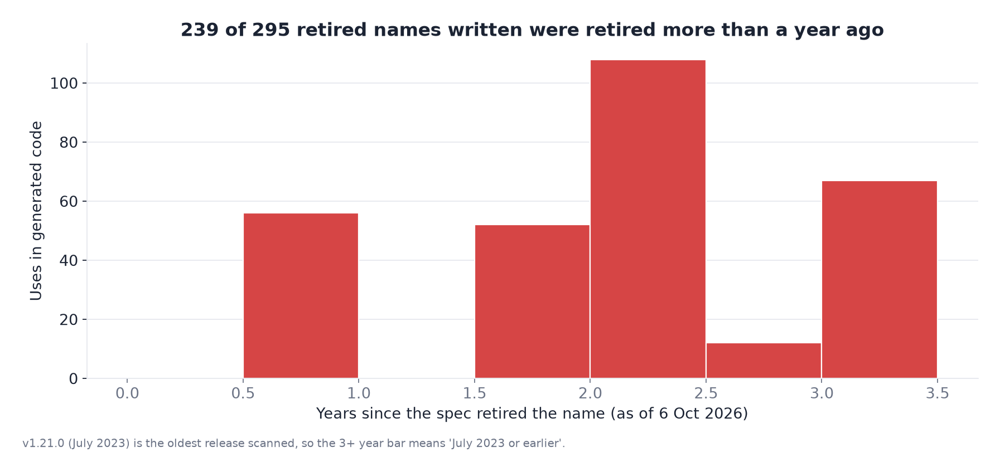
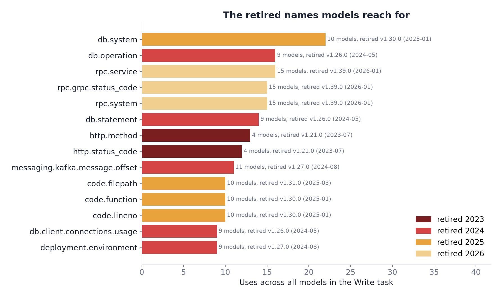
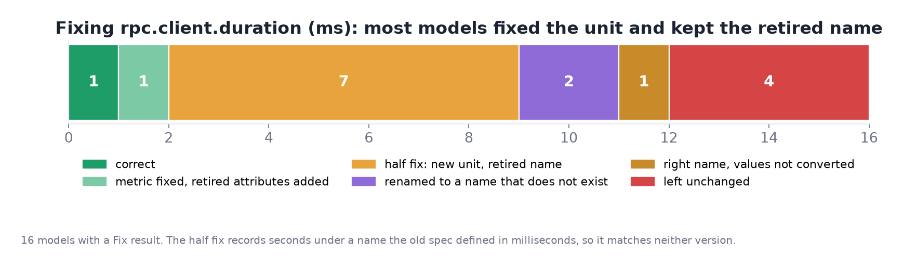
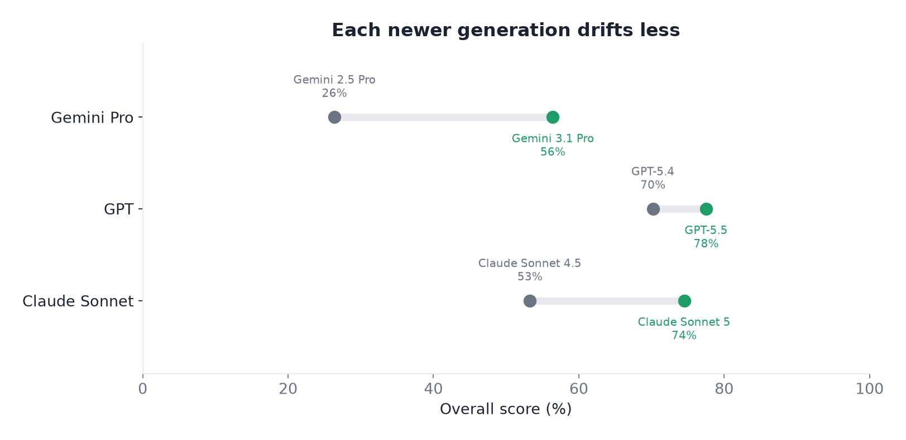
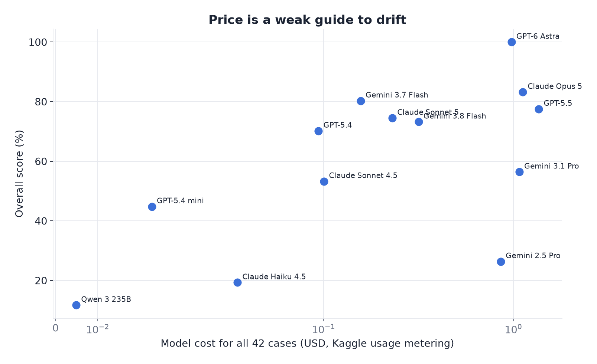
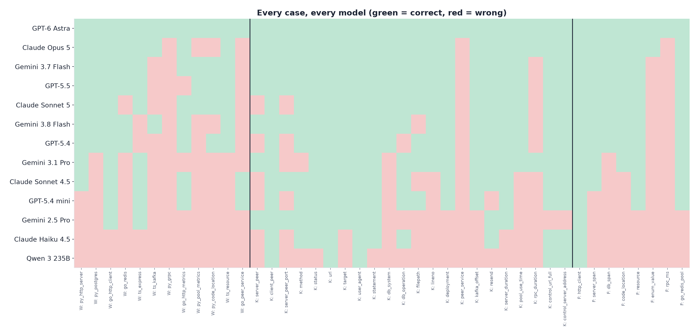
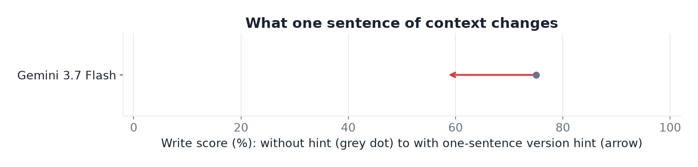

Do AI models write telemetry code with names the spec already retired?
OpenTelemetry renames attributes and metrics between releases. The old names still compile, still export and still store, so nothing fails until a dashboard quietly stops matching. Semconv Drift measures how often models write them, graded in code against every release of the spec. No AI judge.
Leaderboard
Overall is the mean of Write, Know and Fix. Click a column to sort. "Retired" counts retired names written across the 12 Write requests. Hover a score for its 95% Wilson interval.
| # | Model | Overall | Write | Know | Fix | Write + hint | Retired | Cost |
|---|---|---|---|---|---|---|---|---|
| Loading results… | ||||||||
Findings
Every chart is generated from the Kaggle runs by charts.py. Numbers update with each analysis run.

It told me the new name, then wrote the old one

The retired names are old, not new
Most retired names that models write were retired more than a year before the run. This is stale training data, not a fast-moving spec.


db.system leads: renamed to db.system.name in v1.30.0 (January 2025).The half fix

rpc.client.duration (milliseconds), most models converted the values to seconds but kept the retired name. The result matches neither spec version: queries on the old name read values 1,000 times too small, and queries on the new name, rpc.client.call.duration, find nothing.Generations and price


Every case, every model

What one sentence of context changes

How it works
Four tasks on Kaggle Benchmarks. Every answer is graded by grader.py against the spec's own release history, so every score is reproducible.
Write 12 cases
Instrument everyday code: HTTP server and client, Postgres, Redis, Kafka, gRPC, metrics and resources, in Python, Go and TypeScript. Clean only if every name is current and time units are right.
Open taskKnow 22 cases
What replaced a retired name. Includes span-kind traps, silently dropped metrics and two controls whose right answer is "unchanged".
Open taskFix 8 cases
Modernize old snippets, including real code from redis/go-redis. Units must be converted, and an enum value trap checks values as well as keys.
Open taskWrite with version hint 12 cases
The Write requests plus one sentence naming the current spec version. The difference measures what one line of context buys.
Open taskGrading rules
- Retired: deprecated or dropped by the spec, with the release and date that retired it. Names that moved to the GenAI repository are not counted.
- Invented: a key under a namespace the spec owns (
http.,db.,messaging.…) that no release from v1.0.0 to v1.44.0 defined. - Units: only time units (
msagainsts), where a mistake corrupts data. - Reasoning text is removed first, so a model is judged on the code it wrote.
- The answer key is checked too:
build.pyverifies every gold answer against the ground truth before building the tasks.
Ground truth
Exported from the public Attrition dataset, built from every tagged release of open-telemetry/semantic-conventions.